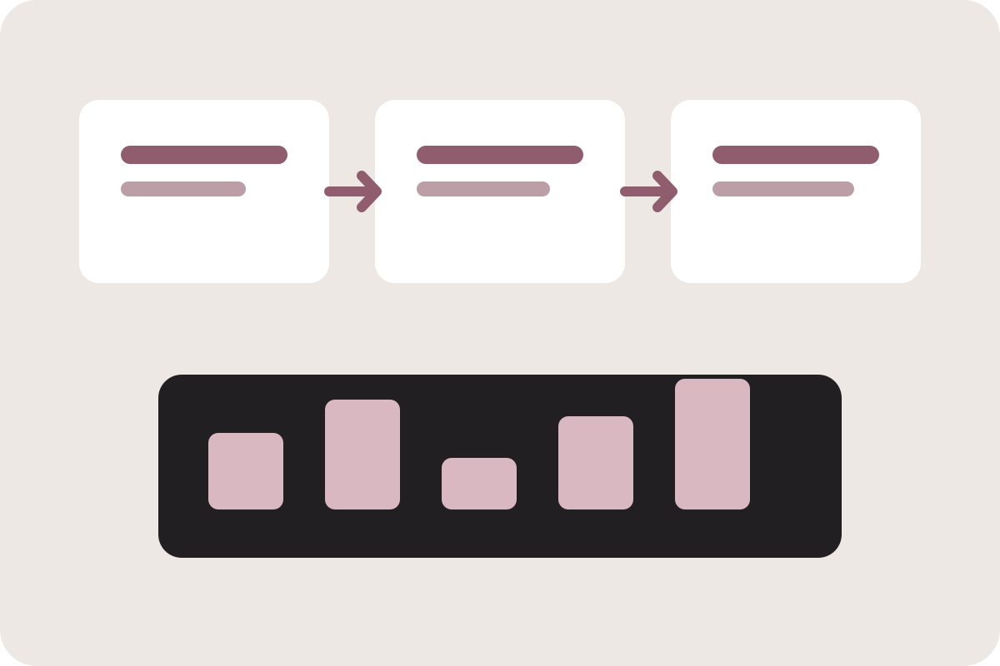

Excel & Power Query
Advanced formulas, pivots, reconciliation, dynamic reports, data cleaning, and repeatable transformation pipelines.
DATA • AUTOMATION • BUSINESS INSIGHT
Data Analyst & Automation Specialist building practical solutions that turn repetitive operational work into fast, reliable workflows.
ABOUT
I work across sales data, stock monitoring, reporting, reconciliation, and process automation. My focus is not only producing reports, but reducing manual work, minimizing human error, and helping teams get information faster.
My toolkit combines advanced Excel, Power Query, Python, SQL, Power Automate, dashboards, and business process understanding.
CAPABILITIES
Advanced formulas, pivots, reconciliation, dynamic reports, data cleaning, and repeatable transformation pipelines.
Bulk file processing, PDF generation, consolidation, validation, renaming, and workflow acceleration.
Automated email distribution, OneDrive-triggered workflows, logging, notifications, and process orchestration.
Querying, data validation, structured analysis, KPI tracking, and decision-ready summaries.
Interactive views for sales, targets, achievement, stock, regional performance, and operational monitoring.
Mapping repetitive tasks, identifying failure points, and redesigning workflows to be faster and safer.
SELECTED PROJECTS

PYTHON • EXCEL • PDF
Automated a workflow that converted hundreds of thousands of Excel rows into formatted PDFs, renamed output files based on business mapping, and applied digital signatures.
POWER AUTOMATE • ONEDRIVE
Built an automated flow to distribute confidential files to hundreds of recipients using row-level email mapping and OneDrive files.
PYTHON • DATA CONSOLIDATION
Standardized and consolidated hundreds of Excel workbooks with different structures into one analysis-ready dataset for sales and stock reporting.
POWER AUTOMATE • APPS SCRIPT
Automated recap and notification workflows to reduce repetitive manual follow-up and improve operational visibility.
DASHBOARD • KPI
Designed KPI views with filters for regional, branch, sub-distributor, month, sales order, target, growth, and achievement.
APPLICATION • OPERATIONS
Developed a workflow concept for inter-branch delivery and operational tracking with a focus on reducing manual coordination.
REPORTING AUTOMATION
Improved a daily reporting process from roughly one full day of work to about one hour through automation and streamlined data preparation.
IMPACT
LET'S CONNECT
I’m open to opportunities in data analytics, business analytics, reporting automation, and process improvement.
Replace the email address inindex.html with your preferred contact email.